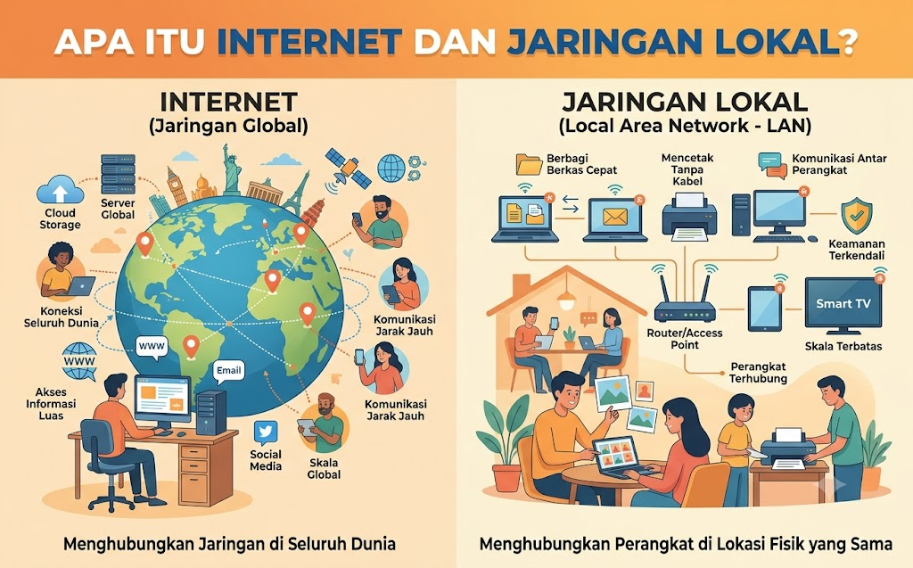
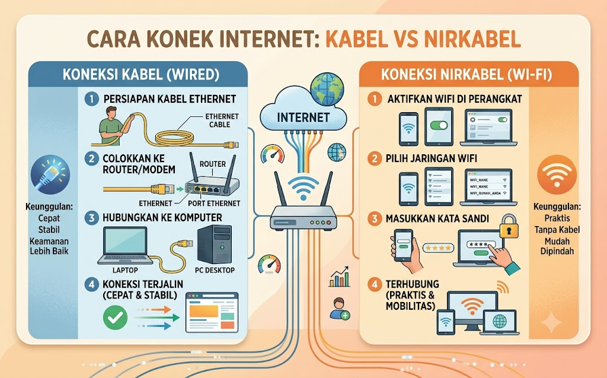

🌐 Jaringan Komputer & Internet
Jelajahi sembilan topik seru seputar jaringan dan internet. Klik kartu untuk mempelajari lebih dalam.

Apa Itu Internet dan Jaringan Lokal? #1

Cara Konek Internet: Kabel vs Nirkabel #2
Melindungi Data dengan Enkripsi #3

Menyambungkan Perangkat ke Jaringan #4

Coba Enkripsi Data Sendiri #5

Internet & Jaringan Lokal Itu Apa Sih? #6

Perjalanan Data di Dunia Jaringan #7

Rahasia di Balik Ponsel Canggih Kita #8

Tips Aman Terhubung ke Internet #9